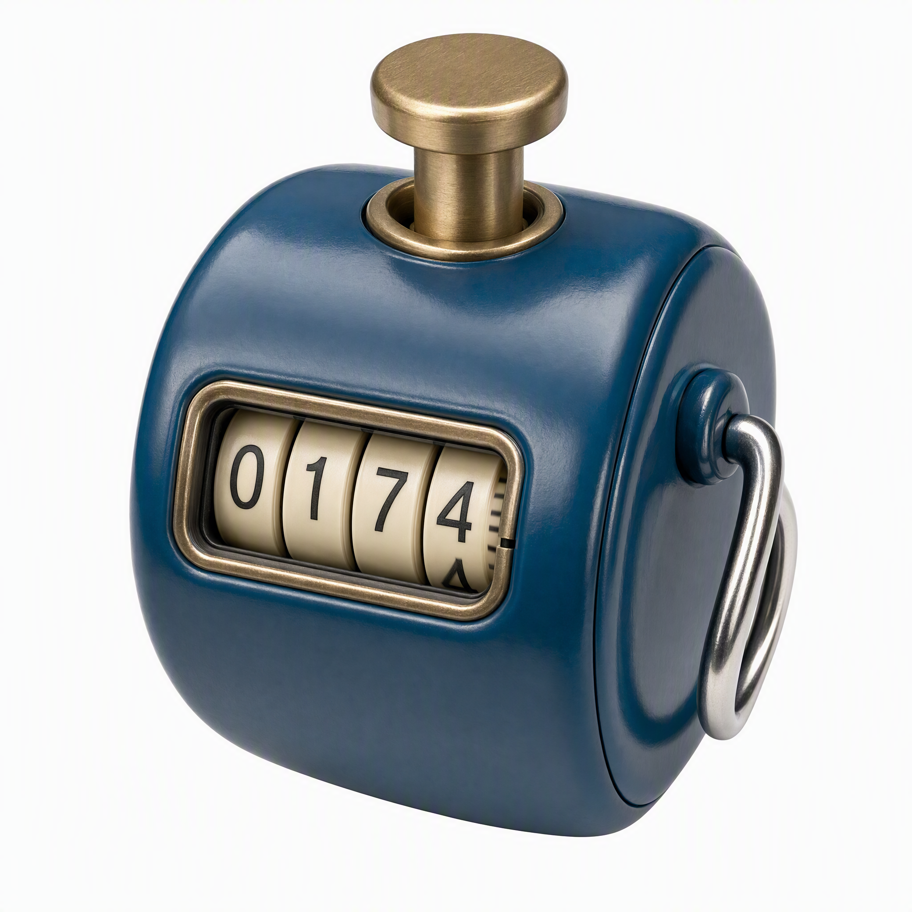

Sleepy
Green cloth, ivory pages and a brass crescent.
Owner-approved native Sunburst image, 2048 × 2048; finishing 04. Local adoption only; publication is separate.
Size checks


At 24/16 px, the silhouette and dominant color carry recognition; fine cloth or polygon details soften. Small UI and browser marks use transparent foregrounds without a tile or another mask.
Application roles
Transparent 24 px expanded or collapsed navigation mark.
Illustrative identity specimens, not proof of a released application.
Native palette evidence
Independent background and placement recipes: presentation.json. Source UI tokens remain unchanged.
Transparent edge checks


Downloads and provenance


Exact prompt
Create one sophisticated skeuomorphic 3D physical-tool logo for Sleepy, a quiet Chinese poetry reader for parents and children. The identity is ONE compact clothbound poetry book, gently open with a small fan of warm ivory pages and a slim brushed-brass crescent bookmark naturally integrated at the upper page edge. The book is the main mass; the crescent is a small crafted reading detail, not a separate floating moon. No writing or printed symbols. Forest-green woven bookcloth, substantial rounded cover edges, fine ivory paper layers, precise stitched binding and restrained antique-brass highlights. Physically credible continuous shading and tactile materials, elegant and calm, not a plastic toy, faceted mascot or flat vector badge. Use the provided reference only for material craft, restrained product lighting and crisp isolated edges. Do not copy its tally counter, blue paint, numbers, controls or shape. A compact three-quarter product-photography view from gently above, showing the book's opening and real thickness. Let the model choose the most graceful angle and overlap. Keep the whole book and bookmark comfortably inside the square with generous clean margins around every corner. One coherent object, no scenery or extra props. One native 2048 by 2048 high-quality PNG on absolutely uniform pure white RGB 255,255,255 through every empty region and canvas edge. All book, paper and metal surfaces are opaque. No floor, cast shadow outside the object, vignette, gray halo, external glow, haze or translucent fringes. Object self-shading is allowed. No text, letters, digits, wordmark, watermark, badge, background tile, collage or mockup. The background and presentation shadows will be composed separately after approval.
Ordered references

Reference order and exact hashes are preserved in request.json; reference assets do not establish product identity or palette.
Owner approval · Generation receipt · Native samples · Checksummed finishing archive